Artisan de l'eau à Plouguerneau, Finistère
Forage, dépannage de pompe et traitement de l'eau dans tout le Finistère
Loïc Abiven, 30 ans d'expérience. Dépannage, entretien et installation de pompes et de pompes à chaleur sur place, pour les particuliers, les professionnels, l'agriculture et les collectivités.
- 30 ans d'expérience
- Intervention sur place
- 60 € HT de l'heure
- Tout le Finistère
Nos services
De la création du forage jusqu'au verre d'eau au robinet.
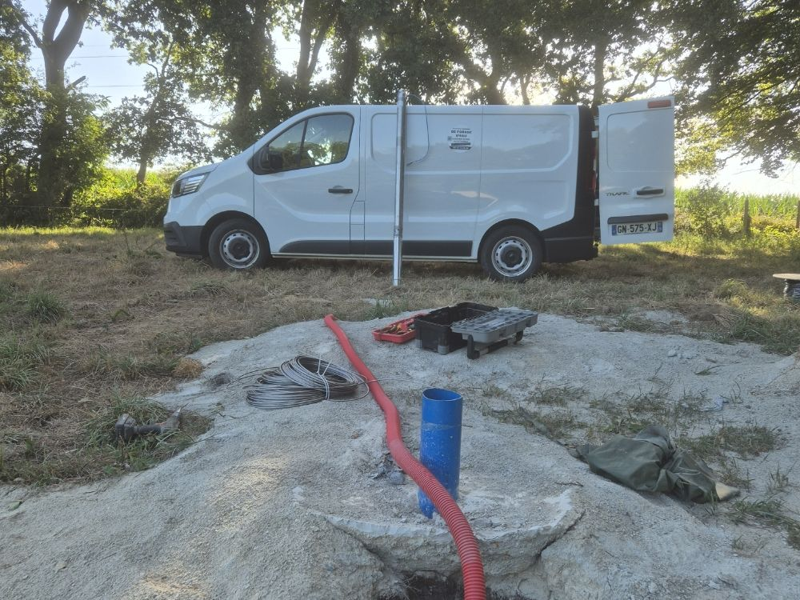
Forage d'eau et de puits
Création et réhabilitation de forages et de puits pour l'arrosage, la maison ou l'activité professionnelle.
En savoir plus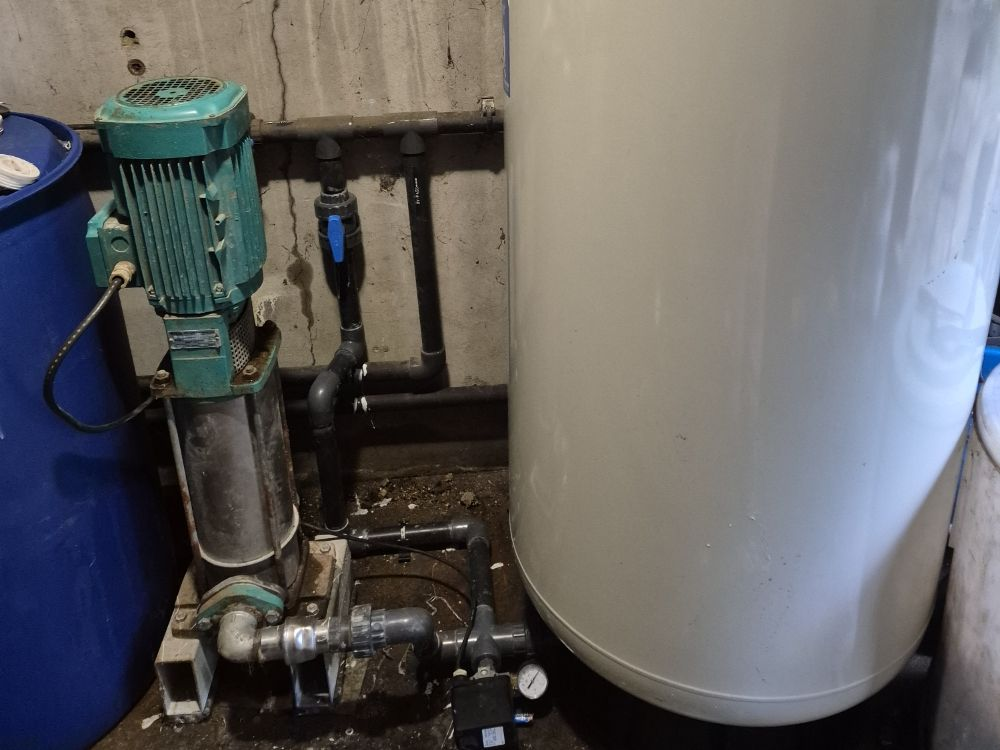
Installation de pompe
Pompes immergées, pompes de surface, surpresseurs : choix, pose et mise en service.
En savoir plus
Dépannage de pompe
Plus d'eau, perte de pression, pompe qui disjoncte : diagnostic et réparation sur place.
En savoir plus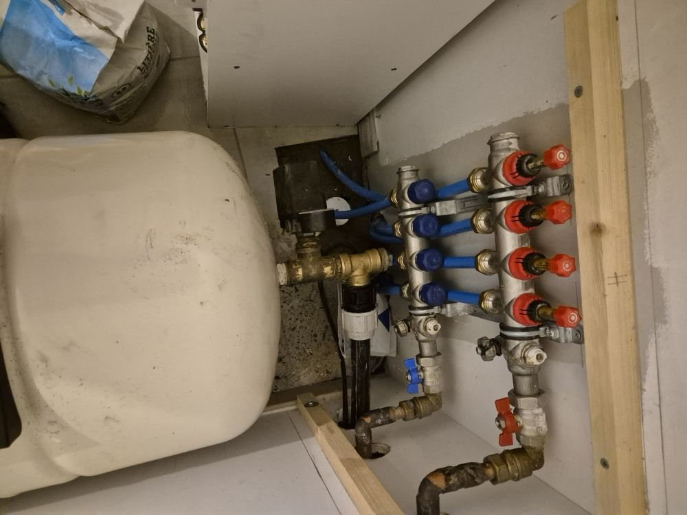
Entretien de pompe
Un contrôle annuel pour éviter les pannes, avant l'hiver ou la saison d'arrosage.
En savoir plus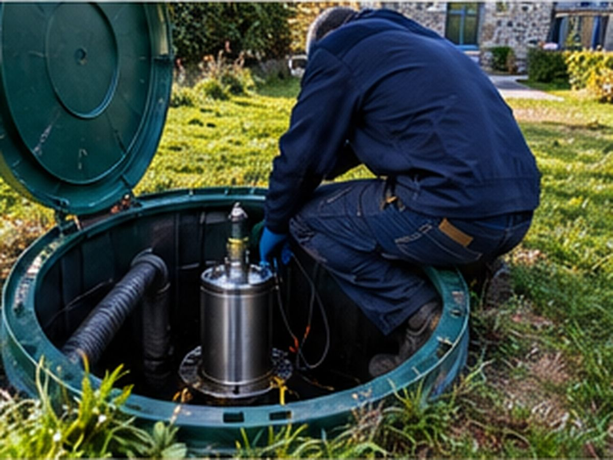
Pompe de relevage
Eaux usées et eaux pluviales : installation, entretien et dépannage de postes de relevage.
En savoir plus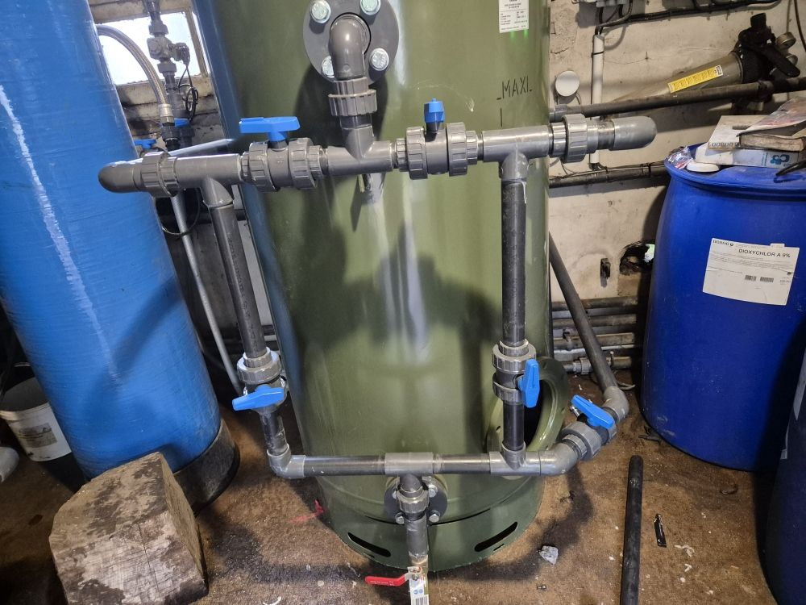
Traitement de l'eau de puits
Eau acide, fer, nitrates, bactéries : analyse et traitement adapté à votre usage.
En savoir plus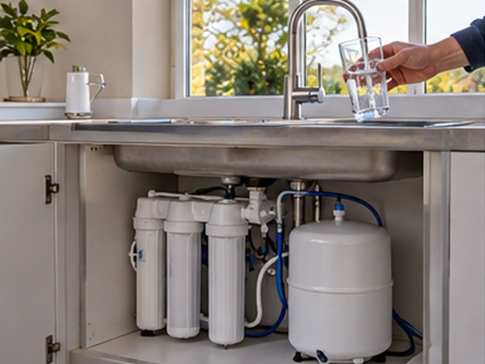
Osmoseur
Une eau de boisson pure au robinet de la cuisine, sur puits, forage ou eau du réseau.
En savoir plus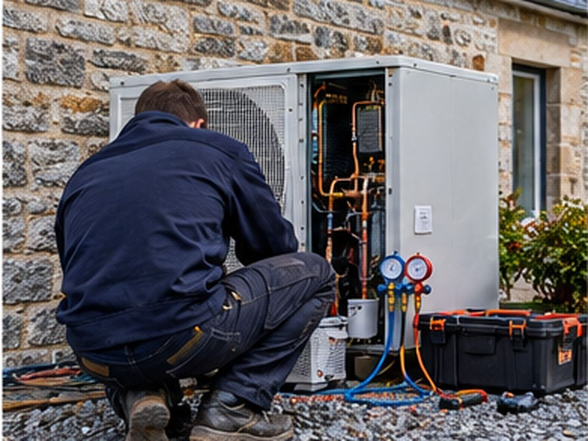
Pompes à chaleur
Installation, entretien, dépannage et réparation de pompes à chaleur.
En savoir plus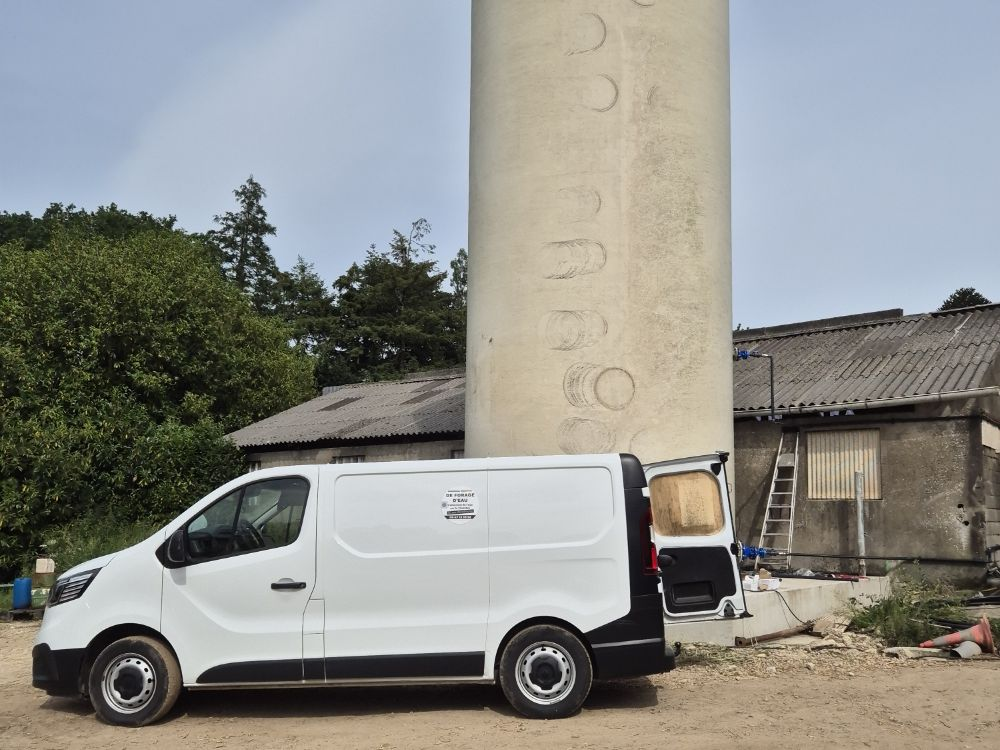
Pros, agriculture, collectivités
Abreuvement, irrigation, eau de process, équipements communaux : des installations dimensionnées pour durer.
En savoir plusNotre façon de travailler
Un seul interlocuteur, du premier appel jusqu'au suivi de votre installation.
- 1
Vous appelez, on fait le diagnostic
Vous décrivez la situation par téléphone. On identifie la piste la plus probable et on intervient sur place pour confirmer.
- 2
On résout le problème
Réparation, remplacement ou installation : on remet votre eau en service, avec un devis clair si du matériel est nécessaire.
- 3
On pense à la suite
Une fois l'urgence réglée, on réfléchit avec vous au court et au long terme : entretien, traitement de l'eau, prévention des pannes.
Votre artisan
Loïc Abiven, 30 ans dans les métiers de l'eau
Basé à Plouguerneau, Loïc Abiven a créé Plouguern Eau en 2025 après 30 ans d'expérience dans le forage, les pompes et le traitement de l'eau.
Quand vous appelez, c'est lui qui répond, qui fait le diagnostic et qui intervient chez vous, partout dans le Finistère.
Découvrir son parcoursPour qui ?
Particuliers
Maison avec puits ou forage, arrosage, récupération d'eau, eau potable.
Professionnels
Entreprises, artisans, campings, gîtes : continuité de l'alimentation en eau.
Agriculture
Abreuvement, irrigation, maraîchage, salles de traite.
Collectivités
Communes et équipements publics : forages, pompes, relevage.
Pourquoi faire appel à Plouguern Eau ?
- 30 ans d'expérience dans le forage, les pompes et le traitement de l'eau.
- Un seul interlocuteur pour le forage, la pompe, le traitement et l'entretien.
- Intervention sur place dans tout le Finistère, depuis Plouguerneau.
- Un tarif clair : 60 € HT de l'heure, équipements chiffrés à part.
- Des conseils pour la suite : on ne repart pas sans avoir parlé prévention.
Main d'œuvre
60 € HT / heure
Hors équipement et déplacement. Devis détaillé avant travaux pour tout matériel à fournir.
Voir les tarifsNos chantiers en photos
Quelques interventions réalisées dans le Finistère : forage, stockage, traitement de l'eau et pompage.
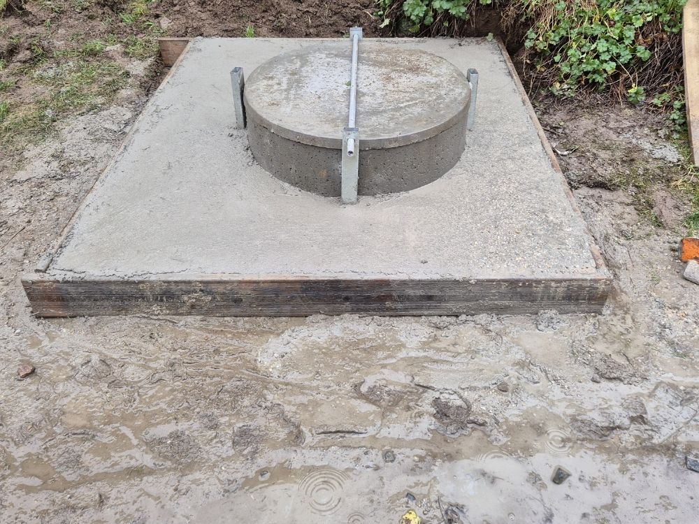
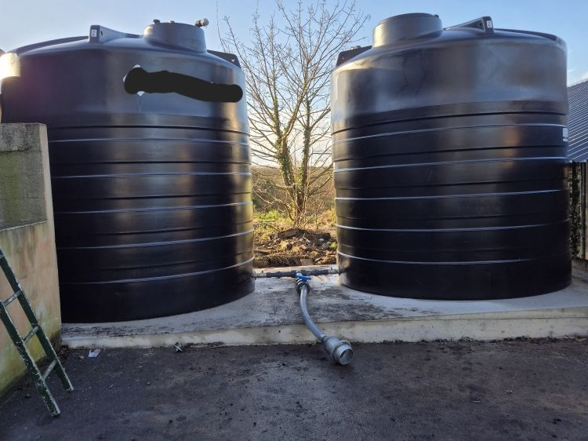
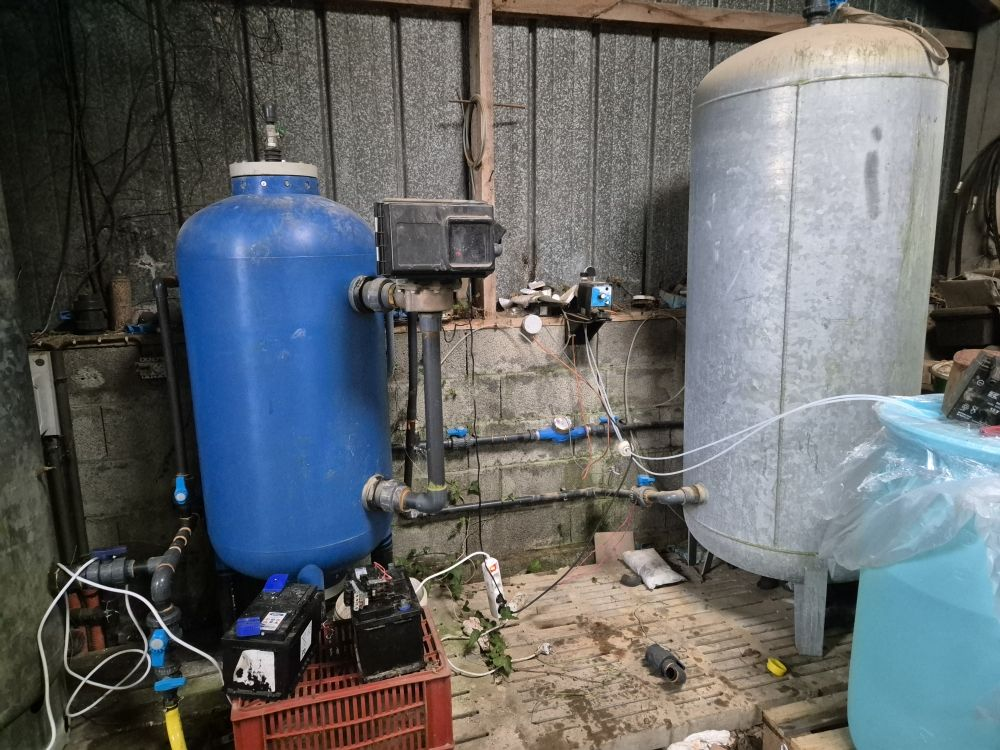
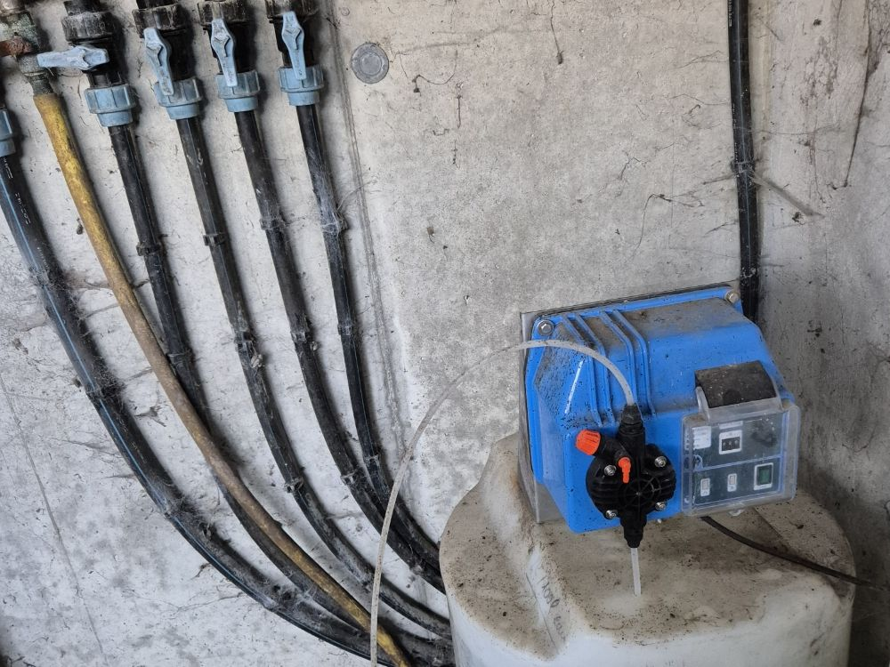
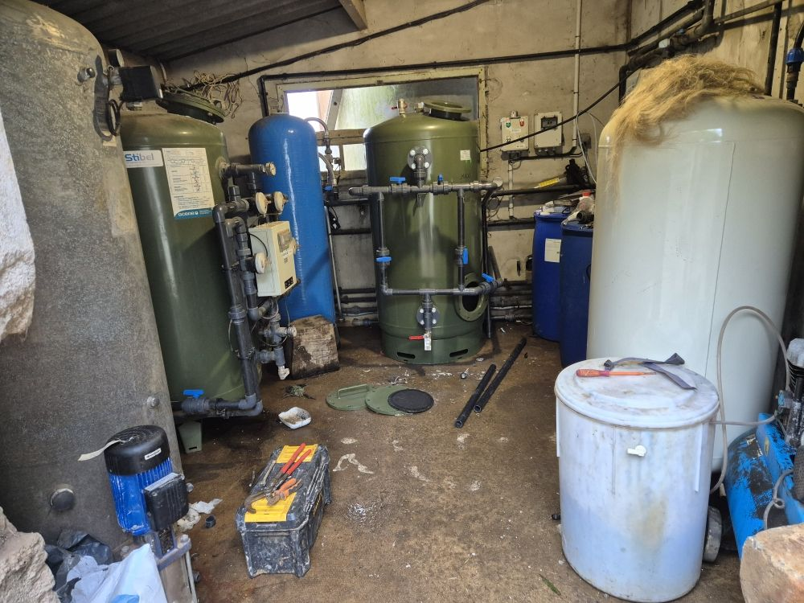
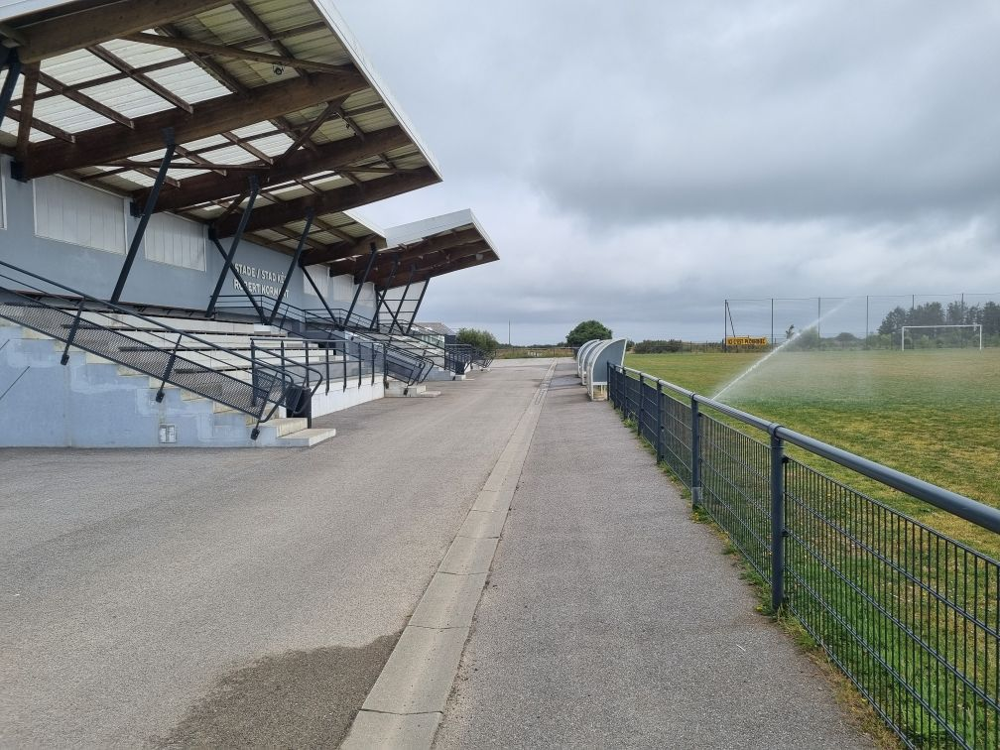
Ils nous ont fait confiance
« Très utile pour les dépannages et traitements d'eau. »
« Bon boulot. Satisfait. Réactif et à l'écoute. »
La carte est fournie par Google, qui peut déposer des cookies.
Intervention dans tout le Finistère
Dépannage, entretien, installation, forage ou traitement de l'eau : nous intervenons sur place dans tout le Finistère, de Plouguerneau à Quimper, de Brest à Morlaix.
Plouguerneau · Lannilis · Landéda · Kerlouan · Guissény · Plouvien · Plabennec · Lesneven · Saint-Pabu · Ploudalmézeau · Saint-Renan · Brest · Landerneau · Landivisiau · Morlaix · Saint-Pol-de-Léon · Châteaulin · Quimper
- Dépannage de pompe dans le Pays des Abers
- Dépannage de pompe sur la Côte des Légendes
- Dépannage de pompe dans le Pays d'Iroise
- Dépannage de pompe à Brest et dans Brest métropole
- Dépannage de pompe autour de Landerneau et de Landivisiau
- Dépannage de pompe dans le Haut-Léon et le pays de Morlaix
- Dépannage de pompe en presqu'île de Crozon et autour de Châteaulin
- Dépannage de pompe à Quimper et en Cornouaille
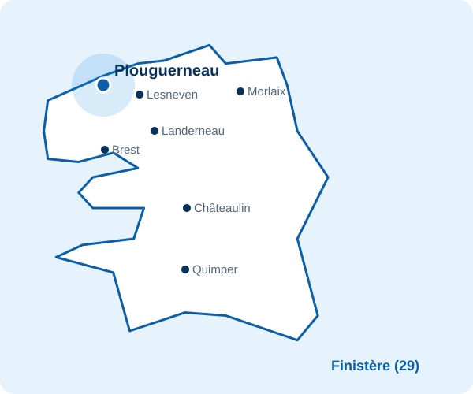
Questions fréquentes
Intervenez-vous dans tout le Finistère ?
Oui. Oui, pour tous nos services, dépannage compris. Basés à Plouguerneau, nous intervenons dans tout le Finistère : Pays des Abers, Côte des Légendes, Pays d'Iroise, Brest métropole, Léon, pays de Morlaix, presqu'île de Crozon, Châteaulin et Cornouaille.
Combien coûte une intervention ?
La main d'œuvre est facturée 60 € HT de l'heure. Les équipements (pompe, pièces, système de traitement) sont chiffrés à part et vous recevez un devis avant les travaux. Les frais de déplacement vous sont indiqués au téléphone avant l'intervention, selon votre commune.
Travaillez-vous pour les professionnels et les collectivités ?
Oui : particuliers, entreprises, exploitations agricoles et collectivités. Les besoins en débit et en qualité d'eau sont étudiés au cas par cas.